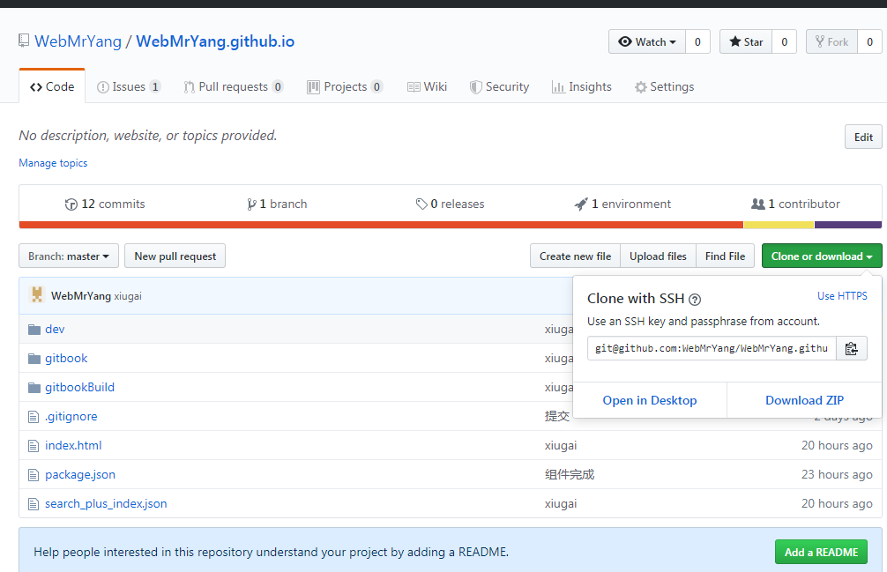

GitHub 学习
1. 什么是 GitHub Pages？
GitHub Pages 是一个通过 GitHub 项目/仓库 进行部署的，以 username.github.io 的形式生成用户的托管平台。
通过 GitHub Pages，用户只需要把自己的内容在本地编辑好，然后推送到 GitHub 仓库即可。
2. github pages好处
- 使用零成本:
github pages集成在github中, 直接和代码管理绑定在一起, 随着代码更新自动重新部署, 使用非常方便. - 免费: 免费提供
username.github.io的域名, 免费的静态网站服务器. - 无数量限制:
github pages没有使用的数量限制, 每一个github repository都可以部署为一个静态网站.
3. 搭建
3.1 新建仓库
打开 GitHub 页面，注册号用户后，新建仓库（New repository），在仓库名（Repository name）中输入 username.github.io，例如 webmryang 的就是：webmryang.github.io，然后点击 Create repository 即可创建一个部署好的环境。(用户名大小生成网址时都是小写)
3.2 Clone 项目
clone项目到本地：

下载的时候选择ssh下载，可以配置ssh免密登录
3.3 上传项目到 GitHub
在项目中加入一个html页面执行一下操作：
```
git add .
git commit -m 'github'
git push
```
3.4 打开 用户名.github.io
打开 用户名.github.io
3.5 查看Settings
在settings中也可以查看项目在网站上的真实的网址